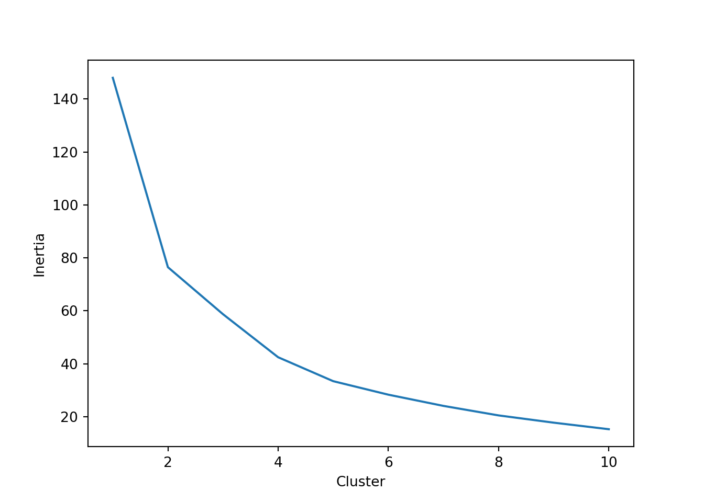
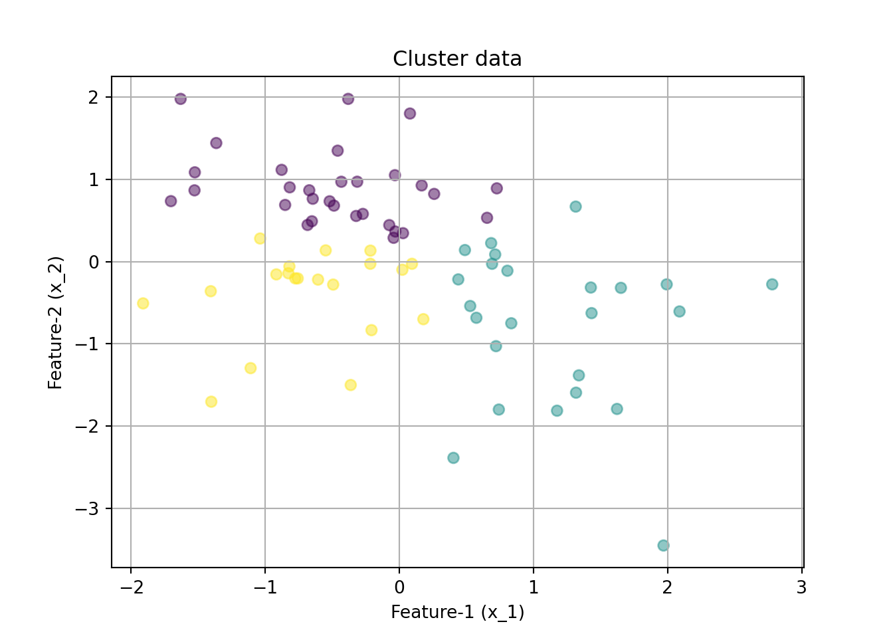
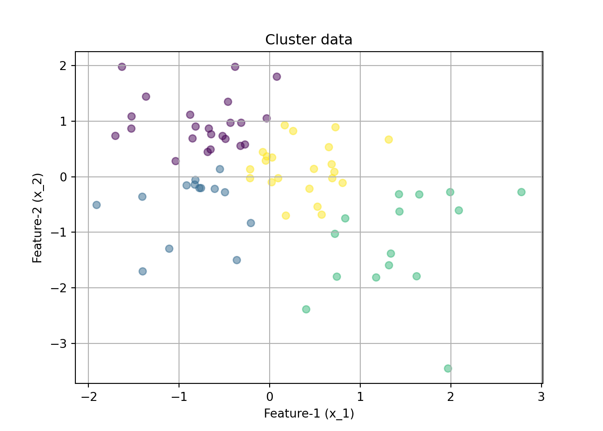

# A tibble: 6 × 3
coach should_go shouldnt_go
<chr> <dbl> <dbl>
1 Adam Gase 0.248 0.957
2 Andy Reid 0.295 0.979
3 Anthony Lynn 0.272 0.955
4 Arthur Smith 0.358 0.963
5 Ben McAdoo 0.267 0.977
6 Bill Belichick 0.238 0.965Coach Clustering
Attempting to “profile” each coach by how they perform on 4th down may give us some important insights into how they make their decisions. This would be a good fit for an unsupervised learning task, as this is just some exploratory analysis to see if we can extract some trends from this data. We do not know yet what kinds of coaches there may be out there, so lets attempt to group them based on the data we do have.
Clean Data for Clustering
We want to select the features to be used during this process, lets try just using two features to start with: should_go and shouldnt_go from our earlier cleaning process. Lets also group by coach alone and not by coach and season to make it easier to interpret the final output.
Lets get an initial look at the data before applying the clustering algorithm.
Obvious clusters have not formed from this, but we will still proceed with the unsupervised learning task.
/Users/tsigall/.virtualenvs/r-reticulate/lib/python3.11/site-packages/threadpoolctl.py:1019: RuntimeWarning: libc not found. The ctypes module in Python 3.11 is maybe too old for this OS.
warnings.warn(
Using the elbow method, the correct number of clusters here seems to be about 3, we will try 2, 3, and 4.
2 Clusters
3 Clusters

4 Clusters

I like 4 clusters the best as we are looking at 2 features here, we can form “quadrants” of sorts. Lets apply the labels to the points and see which coaches fell into which categories.
Labelling Coaches
The four categories I am using to describe coaches here are “Passive”, “Aggresive”, “Impulsive”, and “Strategic”. This can be seen on the plot below.